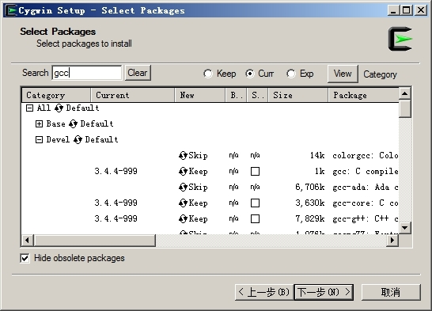

2.1 安装Redis
安装Redis是开始Redis学习之旅的第一步。在安装Redis前需要了解Redis的版本规则以选择最适合自己的版本，Redis约定次版本号（即第一个小数点后的数字）为偶数的版本是稳定版（如2.8版、3.0版），奇数版本是非稳定版（如2.7版、2.9版），生产环境下一般需要使用稳定版本。本书的内容以 3.0 版为目标编写，同时绝大部分内容也适用于 2.6版和2.8版。对于只在最新版才有的特性（如Cluster集群），本书会做特别说明。
Redis兼容大部分POSIX系统，包括Linux、OS X和BSD 等，在这些系统中推荐直接下载Redis源代码编译安装以获得最新的稳定版本。Redis最新稳定版本的源代码可以从地址http://download.redis.io/redis-stable.tar.gz下载。
下载安装包后解压即可使用make命令完成编译，完整的命令如下：
wget http://download.redis.io/redis-stable.tar.gz
tar xzf redis-stable.tar.gz
cd redis-stable
make
Redis没有其他外部依赖，安装过程很简单。编译后在Redis源代码目录的src文件夹中可以找到若干个可执行程序，最好在编译后直接执行 make install命令来将这些可执行程序复制到/usr/local/bin目录中以便以后执行程序时可以不用输入完整的路径。
在实际运行Redis前推荐使用 make test命令测试Redis是否编译正确，尤其是在编译一个不稳定版本的Redis时。
提示 除了手工编译外，还可以使用操作系统中的软件包管理器来安装Redis，但目前大多数软件包管理器中的Redis的版本都较古老。考虑到 Redis 的每次升级都提供了对以往版本的问题修复和性能提升，使用最新版本的 Redis 往往可以提供更加稳定的体验。如果希望享受包管理器带来的便利，在安装前请确认您使用的软件包管理器中Redis 的版本并了解该版本与最新版之间的差异。http://redis.io/topics/problems 中列举了一些在以往版本中存在的已知问题。
OS X 下的软件包管理工具Homebrew 和MacPorts 均提供了较新版本的Redis 包，所以我们可以直接使用它们来安装Redis，省去了像其他POSIX系统那样需要手动编译的麻烦。下面以使用Homwbrew安装Redis为例。
1．安装Homebrew
在终端下输入 ruby -e "$(curl -fsSkL raw.github.com/mxcl/homebrew/go)"即可安装Homebrew。
如果之前安装过 Homebrew，请执行 brew update 来更新 Homebrew，以便安装较新版的Redis。
2．通过Homebrew安装Redis
使用 brew install 软件包名可以安装相应的包，此处执行 brew install redis来安装Redis：
$ brew install redis
==> Downloading
https://downloads.sf.net/project/machomebrew/Bottles/redis-3.0.0.yosemite.bottle.tar.gz
######################################################################## 100.0%
==> Pouring redis-3.0.0.yosemite.bottle.tar.gz
==> Caveats
To have launchd start redis at login:
ln -sfv /usr/local/opt/redis/*.plist ~/Library/LaunchAgents
Then to load redis now:
launchctl load ~/Library/LaunchAgents/homebrew.mxcl.redis.plist
Or, if you don't want/need launchctl, you can just run:
redis-server /usr/local/etc/redis.conf
==> Summary
/usr/local/Cellar/redis/3.0.0: 10 files, 1.4M
OS X 系统从Tiger 版本开始引入了launchd 工具来管理后台程序，如果想让Redis 随系统自动运行可以通过以下命令配置launchd：
ln -sfv /usr/local/opt/redis/*.plist ~/Library/LaunchAgents
launchctl load ~/Library/LaunchAgents/homebrew.mxcl.redis.plist
通过launchd运行的Redis会加载位于/usr/local/etc/redis.conf的配置文件，关于配置文件会在2.4节中介绍。
Redis官方不支持Windows。2011年微软[1] 向Redis提交了一个补丁，以使Redis可以在Windows下编译运行，但被Salvatore Sanfilippo拒绝了，原因是在服务器领域上Linux已经得到了广泛的使用，让Redis能在Windows下运行相比而言显得不那么重要。并且Redis使用了如写时复制等很多操作系统相关的特性，兼容 Windows 会耗费太大的精力而影响Redis其他功能的开发。尽管如此微软还是发布了一个可以在Windows运行的Redis分支[2] ，而且更新相当频繁，截止到本书交稿时，Windows下的Redis版本为2.8。
如果想使用 Windows 学习或测试 Redis 可以通过 Cygwin 软件或虚拟机（如VirtualBox）来完成。Cygwin能够在Windows中模拟Linux系统环境。Cygwin实现了一个 Linux API 接口，使得大部分 Linux 下的软件可以重新编译后在 Windows 下运行。Cygwin还提供了自己的软件包管理工具，让用户能够方便地安装和升级几千个软件包。借助Cygwin，我们可以在Windows上通过源代码编译安装最新版的Redis。
1．安装Cygwin
从Cygwin官方网站（http://cygwin.com）下载setup.exe程序，setup.exe既是Cygwin的安装包，又是Cygwin的软件包管理器。运行setup.exe后进入安装向导。前几步会要求选择下载源、安装路径、代理和下载镜像等，可以根据具体需求选择，一般来说一路点击“Next”即可。之后会出现软件包管理界面，如图2-1所示。

图2-1 Cygwin 包管理界面
编译安装Redis需要用到的包有gcc和make，二者都可以在“Devel”分类中找到。在“New”字段中标记为“Skip”的包表示不安装，单击“Skip”切换成需要安装的版本号即可令Cygwin在稍后安装该版本的包。图2-1中所示gcc包的状态为“Keep”是因为作者之前已经安装过该包了，同样如果读者在退出安装向导后还想安装其他软件包，只需要重新运行setup.exe程序再次进入此界面即可。
为了方便使用，我们还可以安装wget（用于下载Redis源代码，也可以手动下载并使用Windows资源管理器将其复制到Cygwin对应的目录中，见下文介绍）和vim（用于修改Redis的源代码使之可以在Cygwin下正常编译）。
之后单击“Next”，安装向导就会自动完成下载和安装工作了。
安装成功后打开Cygwin Terminal 程序即可进入Cygwin 环境，Cygwin 会将Windows中的目录映射到Cygwin中。如果安装时没有更改安装目录，Cygwin环境中的根目录对应的Windows中的目录是C:\cygwin。
2．修改Redis源代码
下载和解压Redis的过程和2.1.1节中介绍的一样，不过在make之前还需要修改Redis的源代码以使其可以在Cygwin下正常编译。
首先编辑src目录下的redis.h文件，在头部加入：
#ifdef CYGWIN
#ifndef SA ONSTACK
#define SA ONSTACK 0x08000000
#endif
#endif
而后编辑src目录下的object.c文件，在头部加入：
#define strtold(a,b) ((long double)strtod((a),(b)))
3．编译Redis
同2.1.1节一样，执行make命令即可完成编译。
注意 Cygwin 环境无法完全模拟Linux 系统，比如Cygwin 的fork 不支持写时复制；另外，Redis官方也并不提供对Cygwin的支持，Cygwin环境只能用于学习Redis。运行Redis的最佳系统是Linux和OS X，官方推荐的生产系统是Linux。